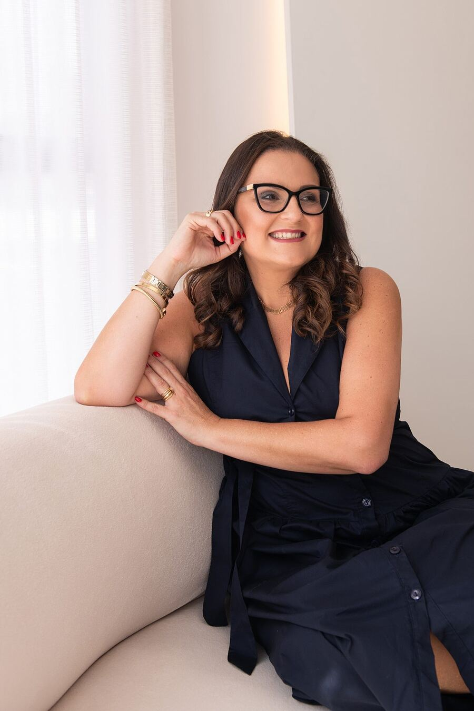

Seu valor reconhecido pelo mercado.
Reputação, autoridade e presença na imprensa com a estratégia e o cuidado de uma boutique de comunicação, com atendimento sênior e 100% personalizado.
A Ties une relacionamento com jornalistas e estratégia para destacar empresas, posicionar lideranças e orientar decisões, inclusive em crises. Um trabalho para fortalecer a confiança e contribuir para gerar vendas.
Sua empresa na imprensa. Seu conhecimento como referência, também nas buscas com IA.
47 98803-8218 • Joinville, Santa Catarina • Atendimento em todo o Brasil
Arraste para baixo
Assessoria de Imprensa • Gestão de LinkedIn para executivos • Ghostwriting • Gestão de LinkedIn e Instagram para empresas • Consultoria de Comunicação Empresarial • Redação jornalística • Mestre de Cerimônias • Gestão de crises de comunicação • Desde 2019
Relacionamento com a imprensa
Quando a imprensa conta,
o mercado presta atenção.
Uma reportagem apresenta a competência da empresa com a credibilidade do jornalismo. Uma entrevista posiciona o executivo como fonte qualificada. A Ties trabalha com boas pautas e relacionamento com jornalistas, fortalecendo reputação e confiança para que o negócio seja reconhecido publicamente.
Comunicação alinhada aos objetivos do negócio.
A consultoria identifica prioridades e define o que comunicar, a quem e em quais canais para fortalecer relações e apoiar vendas.
O que a Ties entrega
Comunicação que valoriza o negócio e abre oportunidades
01Assessoria de Imprensa Nacional
Identificamos notícias, desenvolvemos pautas e conectamos empresas e especialistas a jornalistas de portais, jornais, revistas, rádios e TVs. O trabalho inclui releases, artigos de opinião, preparo e acompanhamento de entrevistas e relatório com análise da cobertura.
Conversar sobre este serviço02Gestão de LinkedIn para executivos e CEOs
A imagem de quem lidera também comunica o valor da empresa. Revisamos o perfil, definimos o posicionamento e transformamos entrevistas em publicações que evidenciam experiência e visão de negócio. Uma presença que fortalece autoridade, aproxima clientes e abre conversas que podem se transformar em negócios.
Conversar sobre este serviço03Ghostwriting para executivos
Organizamos o conhecimento e os pontos de vista de executivos em artigos de opinião que preservam sua voz e seu posicionamento.
Conversar sobre este serviço04Gestão de LinkedIn e Instagram para empresas
Planejamos a presença da empresa e produzimos conteúdos que mostram diferenciais, apresentam soluções e dão visibilidade às pessoas e aos resultados do negócio. A linguagem de cada plataforma fortalece a marca e apoia a decisão de compra.
Conversar sobre este serviço05Consultoria de Comunicação Empresarial
Analisamos a comunicação com o mercado, o posicionamento dos gestores e a relação com os colaboradores. Definimos prioridades, mensagens e canais, incluindo comunicação interna e endomarketing, para conectar equipes, fortalecer a cultura e orientar ações conforme os objetivos do negócio.
Conversar sobre este serviço06Redação jornalística
Boas histórias merecem textos à altura. Produzimos reportagens, entrevistas, textos institucionais e conteúdos para revistas, sites, blogs e LinkedIn. Apuração, clareza e precisão para apresentar conhecimentos e iniciativas que merecem a atenção do público.
Conversar sobre este serviço07Mestre de Cerimônias
A mensagem da empresa ganha força no palco. Apresentamos cerimônias, lançamentos e encontros corporativos com preparo jornalístico, domínio da linguagem e atenção ao público. Alinhamos o roteiro aos objetivos do encontro e conduzimos cada momento com clareza, presença e respeito ao tempo.
Conversar sobre este serviço08Gestão de crises de comunicação
Uma denúncia, um acidente ou uma repercussão negativa pode colocar a reputação da empresa e a confiança dos clientes em risco. Analisamos o cenário, definimos posicionamentos, preparamos porta-vozes e orientamos a comunicação com imprensa, equipes e demais públicos para reduzir danos e conduzir a resposta com responsabilidade.
Conversar sobre este serviçoCada projeto parte da realidade da empresa e dos objetivos do profissional. Os serviços podem ser contratados individualmente ou integrados.
Vamos conversar?Diferenciais
Por que escolher a Ties?
A jornalista Fernanda Thiesen lidera a estratégia, com apoio de profissionais especializados conforme o projeto.
Vamos agendar uma reunião?- 01
Atendimento sênior e personalizado
Contato direto com quem orienta a comunicação e acompanha cada etapa.
- 02
Networking qualificado com a imprensa
Conhecer os jornalistas e os interesses de cada redação ajuda a apresentar a pauta certa a quem pode se interessar por ela.
- 03
Experiência que dá direção à estratégia
Mais de duas décadas de atuação ajudam a reconhecer o que merece destaque e como apresentar cada assunto.
- 04
Redação com apuração e identidade
Apuração e precisão para expressar o conhecimento da empresa e preservar a voz das lideranças.
- 05
Comunicação integrada aos objetivos do negócio
Imprensa, redes sociais e conteúdo se complementam para dar continuidade às mensagens e ampliar o alcance das ações.
Trabalhos
Histórias que ganharam espaço e reconhecimento
Empresas que viraram notícia. Executivos que compartilharam conhecimento e se tornaram fontes para a imprensa.
Conheça pautas, conteúdos e publicações que mostram as entregas da Ties.
- Portais
- Jornais
- Revistas
- Rádios
- TVs

A Ties
Experiência jornalística e conexões que geram oportunidades
Fundada em 2019, a Ties Comunicação nasceu da experiência de mais de duas décadas da jornalista Fernanda Thiesen em grandes empresas e agências, com atuação em assessoria de imprensa, comunicação de executivos C-level e produção de conteúdo.
O propósito é transformar histórias reais em reputação, autoridade e influência, conectando o conhecimento de empresas e lideranças a quem participa das decisões de negócio.
O cliente conversa diretamente com Fernanda, que reúne visão de negócio e uma rede qualificada de relacionamentos com jornalistas, lideranças e profissionais de diferentes setores.
Formada em Jornalismo e Letras, com pós-graduações em Marketing, Comunicação Empresarial e Relações Públicas, alia domínio da linguagem e compreensão dos públicos à condução de cada projeto.
25
anos de experiência
2019
fundação da Ties Comunicação
Formação
graduação em Jornalismo e Letras, pós-graduações em Marketing, Comunicação Empresarial e Relações Públicas
Jornalismo
estratégia + conexões = espaço + reconhecimento
Entenda como trabalhamos
Da estratégia aos resultados, cada etapa tem um propósito
01
Compreender o negócio
Conhecemos a empresa, as lideranças e os públicos de interesse. Identificamos diferenciais, prioridades e oportunidades de comunicação.
02
Definir a estratégia
Definimos mensagens, canais e ações. A proposta detalha entregas, frequência e investimento.
03
Colocar em prática
Realizamos entrevistas, produzimos conteúdos e executamos o plano. Na assessoria de imprensa, apresentamos pautas e acompanhamos oportunidades de divulgação.
04
Analisar e aperfeiçoar
Reunimos as entregas em relatórios e avaliamos os resultados conforme os objetivos. A análise orienta ajustes e os próximos passos.
Blog da Ties
Histórias, bastidores e análises sobre imprensa, LinkedIn e reputação para empresas e lideranças que querem ser reconhecidas pelo mercado.
- Publicação 1
Em preparação
- Publicação 2
Em preparação
- Publicação 3
Em preparação
Perguntas frequentes
O que saber
antes de começar
Qual serviço faz sentido para a empresa ou o executivo?
Começamos pelos objetivos e pelo que merece reconhecimento público.
- A assessoria de imprensa busca espaço na mídia;
- O LinkedIn posiciona lideranças;
- O ghostwriting dá voz e coloca no papel as ideias do executivo;
- O LinkedIn e Instagram fortalecem a presença e imagem das empresas;
- A consultoria define estratégias de comunicação interna e externa;
- E a gestão de crises orienta respostas para proteger a reputação.
A assessoria de imprensa garante publicações?
Cada publicação depende do interesse de uma redação. A Ties identifica boas histórias, desenvolve pautas e mobiliza o relacionamento com jornalistas para conquistar espaço. A decisão editorial cabe ao veículo.
Como funciona a rotina de gestão do LinkedIn de executivos?
O executivo participa de entrevistas e aprova os materiais. A Ties planeja, redige, seleciona imagens, publica, acompanha interações, orienta respostas e entrega relatórios. A rotina é combinada para respeitar a agenda do profissional.
Como os resultados são acompanhados?
Na imprensa, analisamos publicações, veículos e mensagens presentes na cobertura. A valoração estima o custo de espaços equivalentes em publicidade. No LinkedIn, avaliamos indicadores, contatos e convites conforme os objetivos.
A presença na imprensa e no LinkedIn pode ampliar a visibilidade nas buscas com IA?
Sim. Reportagens, entrevistas e conteúdos relevantes no LinkedIn ampliam as referências sobre empresas e executivos. Isso pode favorecer a descoberta e a citação nas respostas de IA, conforme o acesso e os critérios de cada ferramenta.
Como é definido o investimento?
A proposta considera os objetivos, os serviços, a frequência e a complexidade das entregas. Antes de começar, ficam claros o trabalho previsto, os prazos e o investimento.
Contato
Qual conquista merece ser conhecida?
Conte à Ties o que está acontecendo no negócio e o que deseja alcançar. Vamos identificar as oportunidades e apresentar um plano de trabalho.
Converse com a Ties pelo WhatsAppJoinville, Santa Catarina • Atendimento em todo o Brasil